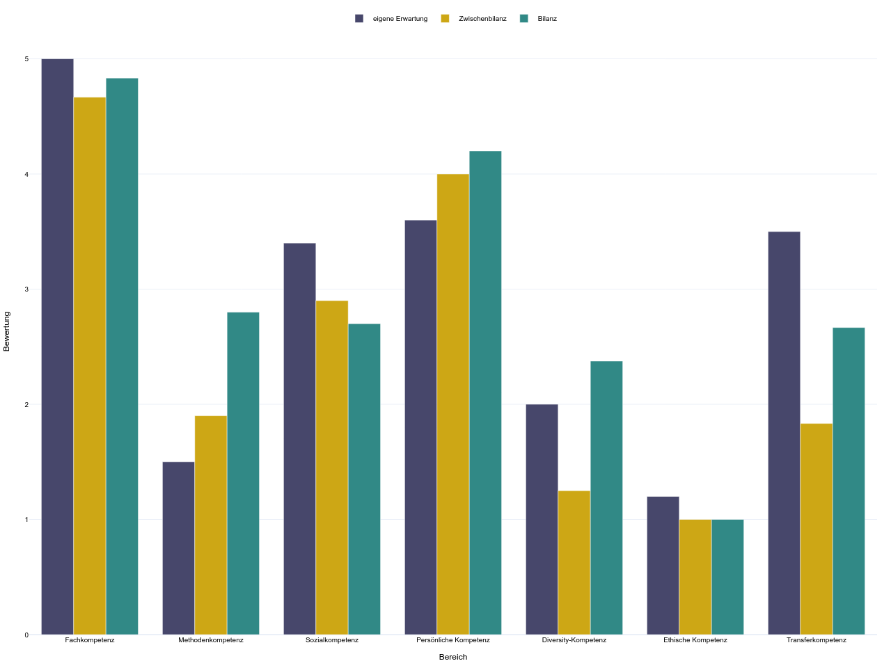

Bachelor Thesis Kolloquium Präsentationen
Author
Benedikt Schnur

Theorie-Praxis-Transfer
Benedikt Schnur
Thesis Präsentation
Benedikt Schnur
No matching items
![]()